Deep Field: User Guide
A tool for watching any patch of sky change over time, built on NASA SPHEREx images. This guide walks through every page and every control, using screenshots of the real app.
Pages at a glance
| Page | Address | What it is for |
|---|---|---|
| Sky Viewer · Simple | /sky | The main tool. Pick a target or type coordinates, then play back every SPHEREx visit. This is the default view. |
| Sky Viewer · Pro | /sky?ui=pro | The same data in an analysis workstation, with layers, a timeline, measurements, panels and a cache view. |
| Proof | /proof | How we know the tool is right: every measurement graded against Gaia DR3, the full maths of each method, the tests, and the known limits. |
| The Hunt | /hunt | Experimental, simulated. An overview of the Planet Nine search. |
| Candidate Lab | /lab | Experimental, simulated. Inspect injected test candidates and run the classifier on them. |
| Classify | /classify | Experimental, simulated. Phone-friendly crowd voting on candidate cards. |
| Injection tests | /hunt/proof | Experimental, simulated. Injection-recovery completeness of the Planet X search. |
Opening the site root (/) takes you straight to the Sky Viewer.
Top navigation (every page)
| Deep Field logo | Back to the Sky Viewer start page. |
| Sky Viewer | The main tool. |
| Proof | The evidence that the tool's measurements are right (section 6). |
| Planet X · experimental | Links to The Hunt, Candidate Lab, Classify and Injection tests. Every one of these pages carries a green “simulated data” banner. |
| Data-source badge | “live NASA access” when the API is connected (as on the live demo): new positions are built from NASA's archive. “ready-made views” on a static copy, which serves only the prepared targets. Screenshots in this guide were taken on a static copy. |
1 · Sky Viewer: start page
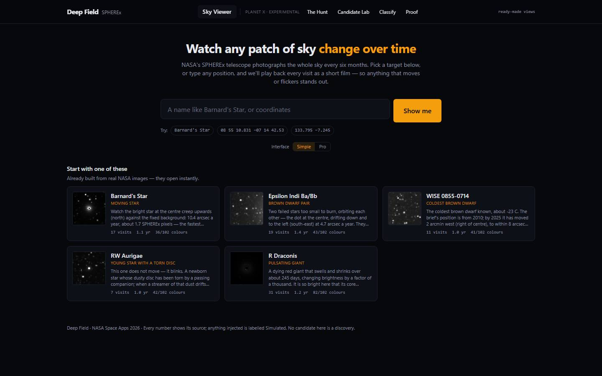
/sky.| Search box | Type an object name (e.g. Barnard's Star, eps Ind B) or coordinates, either sexagesimal (08 55 10.8 −07 14 42) or decimal degrees (133.795 −7.245). |
| Show me | Opens that patch of sky. Press Enter in the box for the same effect. For a position nobody has built yet, the site first asks NASA what images exist (“NASA has 219 images of this spot… on 10 separate visits”), then Build it downloads and aligns them in a few minutes. After that the view is cached for everyone. |
| Try: chips | Fill in an example (a name, a sexagesimal position or a decimal position) and open it. |
| Interface: Simple / Pro | Picks the view to open. Simple is the default; Pro opens the workstation. |
| Target cards | Five ready-made fields, built from real SPHEREx data, that open instantly. Each card shows visits, time span and how many of the 102 colours were seen. |
2 · Sky Viewer: Simple view
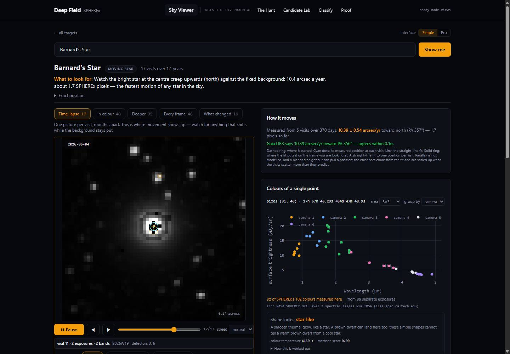
| ← all targets | Back to the start page. |
| Simple / Pro | Switches view and keeps the same target, mode and field size. |
| Exact position ▸ | Expands the coordinates. For a fast-moving star it also explains why the view is centred where Gaia says the star is now, not at its year-2000 catalogue position. |
| Mode tabs | Time-lapse: one picture per visit, best for spotting movement. In colour: infrared bands mapped to red, green and blue. Deeper: same-colour images stacked so faint things show. Every frame: each raw exposure. What changed: each visit minus the first. The number on each tab is how many frames it has. Keys 1–5 switch modes. |
| Player | Plays the frames as a film. The date of the current frame is in the top-left corner. Click anywhere on the image to get the spectrum at that point. |
| Pause / Play · ◀ ▶ · slider · speed | Play or stop, step one frame, scrub, and choose the playback speed. Space plays or pauses; ← → step one frame. |
| How it moves | Shown for moving stars. Gives the motion measured from SPHEREx, with its error and direction, next to Gaia DR3's value and how well they agree. It refuses to give a number when the measurement isn't trustworthy, for example a saturated star or a blended source. |
| Colours of a single point | The spectrum at the clicked pixel, one dot per exposure. area sets the aperture (1×1, 3×3, …). group by colours the dots by camera or by visit. Below the chart, “Shape looks …” is a simple fit (star-like, reflected sunlight, …) with its fitted temperature. A saturated pixel gives a warning and a button that jumps to the nearest usable pixel. |
| This view at a glance | Visits, years covered and colours measured. Technical details expands the data provenance. |
3 · Simple view: tools below the player
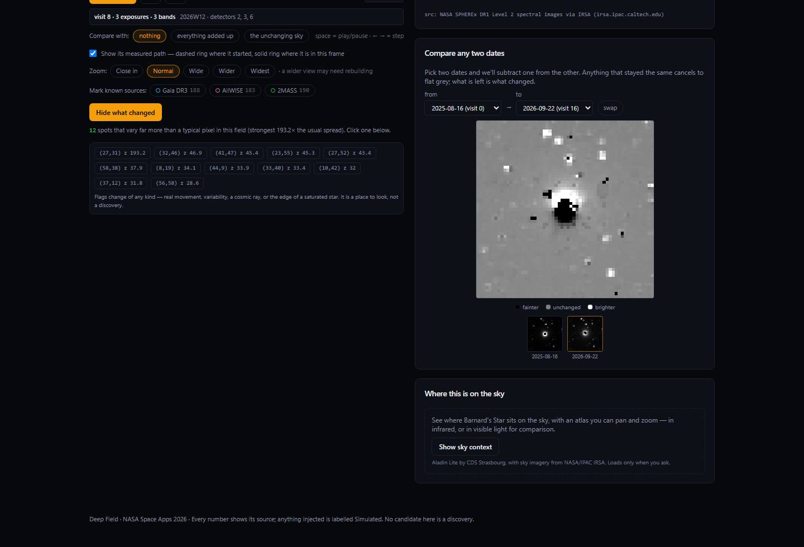
| Compare with | nothing shows the frame on its own. everything added up overlays the stack of all images. the unchanging sky overlays the median of all visits; anything that moves stands out against it. |
| Show its measured path | Turns the motion track on or off. The dashed ring marks where the star started and the solid ring where it is in this frame. |
| Zoom | Field size: Close in (0.05°), Normal (0.1°), Wide (0.2°), Wider (0.35°), Widest (0.5°). A size that hasn't been built yet is built live from NASA (a few minutes); a static copy offers only the sizes built in advance. |
| Mark known sources | Rings around catalogued objects: Gaia DR3 (its rings move with each star's proper motion), AllWISE and 2MASS. The number on each button is how many sources are in view. |
| Find what changed / Hide | Scores every pixel against “nothing happened here”. Flagged spots are listed with pixel position and strength (z); click one to go to it. A flagged spot is a place to look, not a discovery. |
| Compare any two dates | Choose from and to visits; swap reverses them. White means brighter, black means fainter, grey means unchanged. |
| Show sky context | Loads an Aladin Lite atlas you can pan and zoom, so you can see where this field sits on the whole sky. It loads only when you ask. |
4 · Sky Viewer: Pro workstation
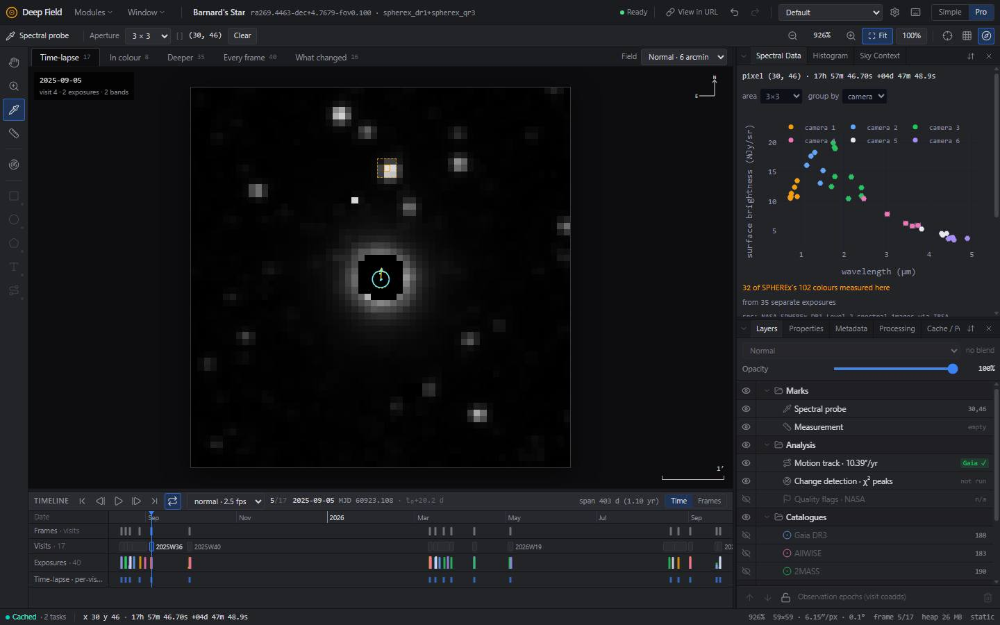
/sky?q=Barnard's Star&ui=pro with the spectral probe on a field star.Top bar
| Modules | Jump to the Sky Viewer or the Planet X pages (marked experimental). |
| Window | Show or hide each panel, the panel dock (\) and the timeline, and pick a workspace layout: Default, Image Analysis, Temporal Analysis, Spectral Analysis, Processing or Performance Monitoring. Reset restores the current layout. |
| View in URL | Copies a link that reopens this exact field, mode and field size. |
| Undo / Redo | Steps back and forward through edits (Ctrl+Z, Ctrl+Shift+Z). |
| Workspace list | The same workspace layouts as the Window menu. |
| ⚙ Settings | Coordinate format (hms/dms or decimal degrees), and canvas crosshair, pixel grid, compass and hints. Stored in this browser only. |
| ⌨ Keyboard shortcuts | Opens the shortcut sheet (?); see section 7. |
| Simple / Pro | Back to the Simple view, keeping the same target. |
Options bar and canvas
| Tool options (left) | Settings for the active tool. For the probe, these are the aperture ([ / ]), the probed pixel and Clear. |
| − · zoom % · + · Fit · 100% | Zoom out or in, fit the image to the screen (F), or show actual pixels (0). The mouse wheel zooms at the cursor. |
| Crosshair · Pixel grid · Compass | Canvas overlays (X, G). The compass shows N/E and a scale bar. |
| Mode tabs · Field | The same five modes as the Simple view, plus a field-size list. |
Left toolbar
| Pan H | Drag to move around the image. Middle-drag pans with any tool. |
| Zoom Z | Click to zoom in; Alt-click to zoom out. |
| Spectral probe I | Click a pixel for its spectrum, built from every exposure. The result appears in the Spectral Data panel. |
| Measure M | Drag between two points for their angular separation and position angle. |
| Change detection D | Scores every pixel against “nothing changed” and marks the peaks (green boxes, below). |
| Greyed-out tools | Rectangle, ellipse and polygon regions, annotation, and object tracking. They are visible but disabled; hovering one explains which backend feature it needs. None of them pretends to work. |
Timeline (bottom)
| |◀ ◀ ▶ ▶ ▶| | First frame, previous, play/pause, next, last (Home ← Space → End). |
| Loop · speed | Loop on/off (L) and playback speed. |
| Time / Frames | Time places frames at their real dates, so the survey cadence is visible. Frames spaces them evenly, which separates frames taken minutes apart. |
| Lanes | Frames, Visits, Exposures (coloured by detector) and the current mode. Hover any tick for its details (ID, detector, wavelength, % good pixels, date); click it to jump there. |
Status bar
Background tasks, cursor pixel and sky coordinates, zoom, image size and pixel scale, current frame, browser memory use, and data source (static = ready-made files).
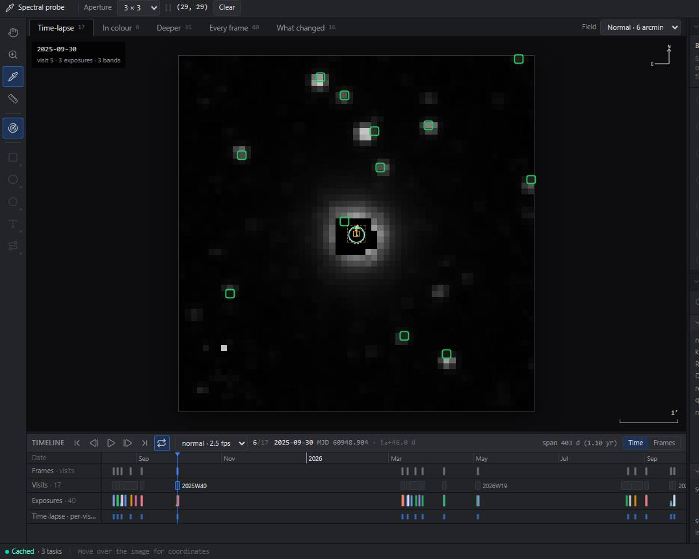
5 · Pro workstation: panels
Panels sit in two docked groups on the right. Each group header has collapse, move to the other group (⇅) and close (×) buttons; reopen a closed panel from Window.
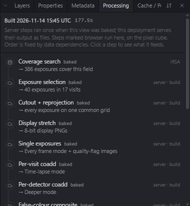
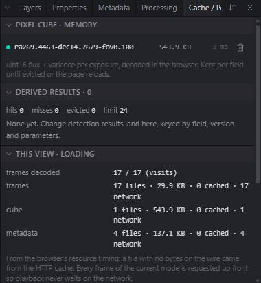
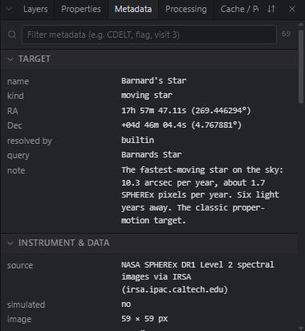
| Spectral Data | Spectrum at the probe: area (aperture), group by camera or visit, the shape fit, and saturation warnings. |
| Histogram | Pixel statistics of the current frame. |
| Sky Context | About this field and where it sits on the sky. |
| Layers | Everything drawn on the canvas, grouped into Marks, Analysis (motion track, change detection, quality flags), Catalogues, Comparison and Observation. Each layer has an eye (show/hide). At the top: blend mode and opacity. At the bottom: move up/down, lock, and delete (source data layers can't be deleted). |
| Properties | Settings and provenance of the selected layer. For the motion track this includes the measured motion, Gaia's value and the per-visit fits. |
| Metadata | Target, instrument and data, WCS and per-visit records, searchable. |
| Processing | The processing graph: steps baked on the server (coverage search, cutouts, coadds, …) and steps run in the browser (spectrum, change detection, motion fit). Click a step to see what it feeds. |
| Cache / Performance | The pixel cube held in memory (with an evict button), derived-result cache hits, misses and evictions, and per-view network loading. All figures are live; nothing is mocked. |
| Compare | Subtract any visit from any other, in calibrated flux. |
| History | Undo steps for this view; click one to go back to it. |
| Targets | The ready-made fields, plus search. |
6 · Proof: how we know the tool is right
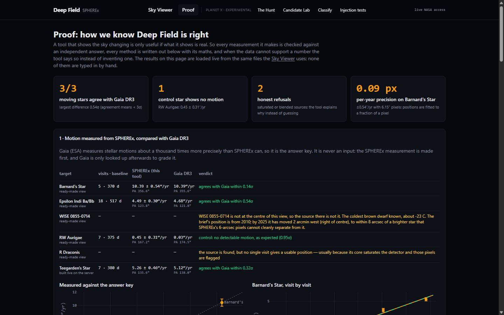
/proof. Every number is loaded live from the same measurement files the viewer uses.| Scoreboard | Moving stars that agree with Gaia DR3, the control star that shows no motion, honest refusals, and the per-year precision on Barnard's Star in pixels. |
| 1 · Motion vs Gaia | Every view's measured motion next to Gaia DR3, with the difference in units of our error (agreement means under 3σ). It includes views built live on the server (Teegarden's Star). Each target name opens it in the Sky Viewer. |
| Charts | Measured against the answer key: SPHEREx vs Gaia, one point per star, on a line of perfect agreement. Barnard's Star, visit by visit: its fitted position at each usable visit, our straight-line fit, and Gaia's predicted slope. |
| 2–4 · Methods | The maths of the motion fit (background removal, noise-weighted coadd, Gaussian position fit, line fit, conversion to the sky, grading against Gaia), the epoch propagation that keeps fast movers in view, spectra on the fly, the shape classifier, and change detection. |
| 5 · Evidence | Checks on real data, the automated tests with planted answers, and the bugs the tests missed that real data caught. |
| 6–7 · Limits, provenance | Known limits stated plainly, and where every dataset comes from. |
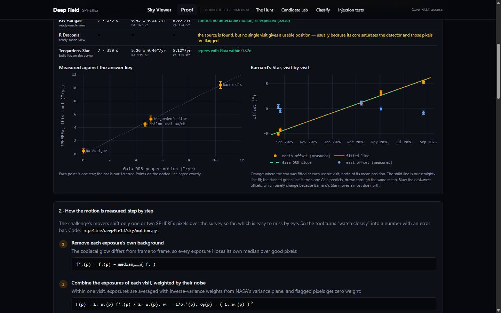
7 · Keyboard shortcuts
Press ? in the Pro view for this sheet. Space and the arrow keys also work in the Simple view. Shortcuts are ignored while you are typing in a field.
| Key | Action | Key | Action |
|---|---|---|---|
| Space | Play / pause | ← → | Previous / next frame |
| Home End | First / last frame | L | Loop on / off |
| 1–5 | Time-lapse · In colour · Deeper · Every frame · What changed | H | Pan tool |
| Z | Zoom tool (Alt-click zooms out) | I | Spectral probe |
| M | Measure | [ ] | Smaller / larger spectrum aperture |
| F | Fit to screen | 0 | Actual pixels (100%) |
| + − | Zoom in / out | Wheel | Zoom at the cursor |
| Middle-drag | Pan with any tool | X | Crosshair |
| G | Pixel grid | D | Run / show change detection |
| Ctrl+Z | Undo | Ctrl+Shift+Z / Ctrl+Y | Redo |
| \ | Show / hide the panel dock | Esc | Close a dialog / leave a text field |
8 · Planet X pages (experimental)
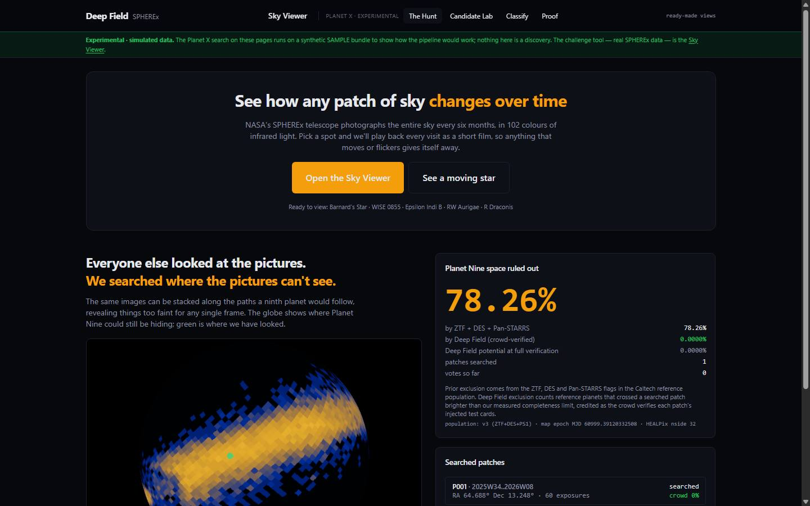
/hunt)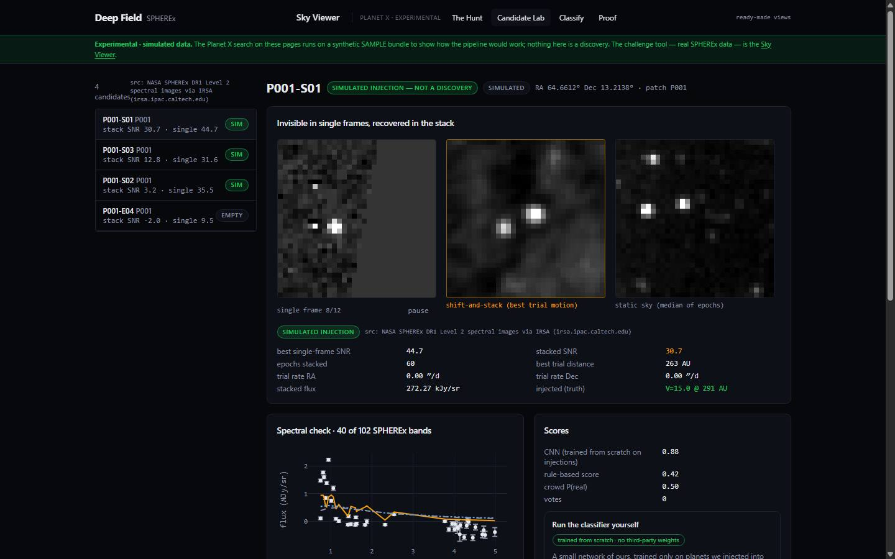
/lab)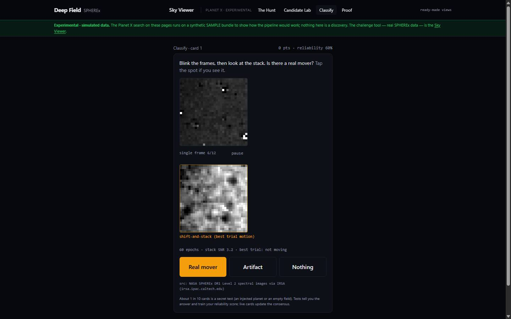
/classify)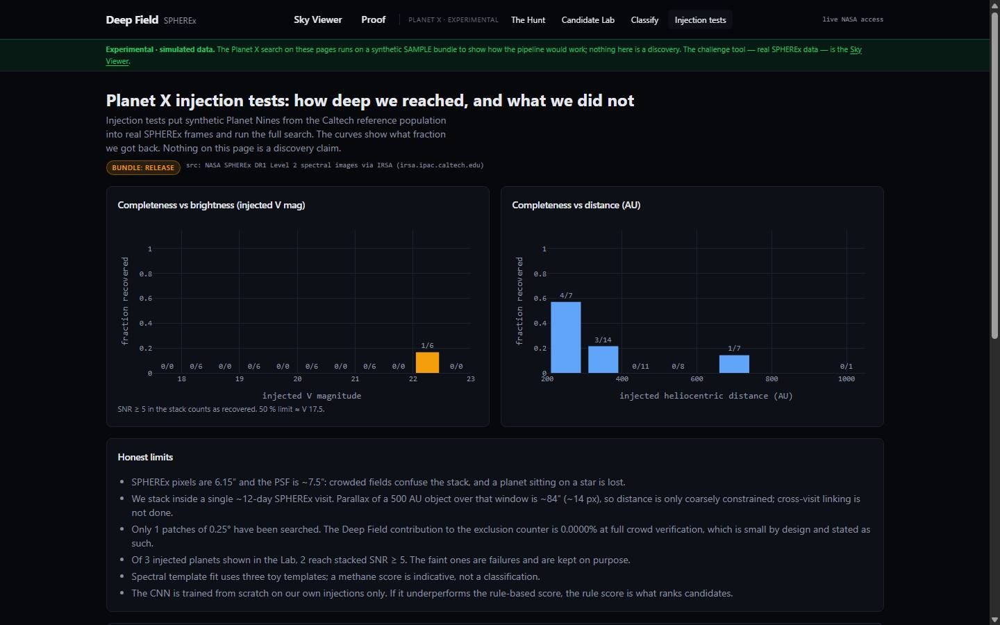
/hunt/proof)| Page · control | What it does |
|---|---|
| Hunt · Open the Sky Viewer | Goes to the main tool. |
| Hunt · See a moving star | Opens Barnard's Star in the Sky Viewer. |
| Hunt · globe and counter | Where a Planet Nine could still be, according to a reference population (green = searched patches), and how much of that space surveys have ruled out. Deep Field's own share is shown separately; so far it is effectively 0%. |
| Hunt · Open the Candidate Lab / Classify on your phone | Links to the next two pages. |
| Lab · candidate list | Pick a candidate. Labels: SIM = injected test planet; EMPTY = an empty control field. |
| Lab · pause | Stops the single-frame blink so you can compare it with the shift-and-stack image and the static sky. |
| Lab · Score it here | Runs our small classifier, trained from scratch on injections, in the browser; shown next to the rule-based score and the crowd vote. |
| Classify · pause | Stops the frame blink. |
| Classify · Real mover / Artifact / Nothing | Your vote on the card; you can also tap the spot first. About 1 card in 10 is a hidden test that trains your reliability score. |
| Injection tests | No buttons. Charts of the fraction of injected planets recovered, by brightness and by distance, followed by the honest list of limits. |